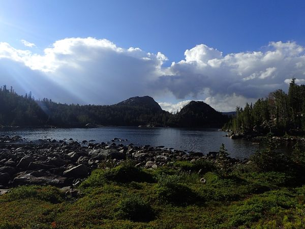
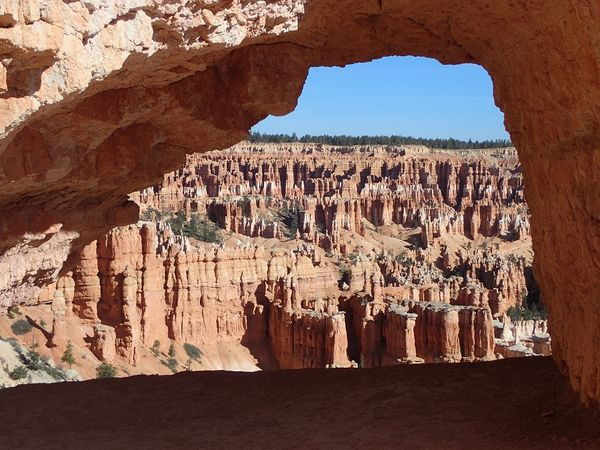

 Gannet Peak - Day 2 - Wrong Turn When I woke up, it was overcast and grey and just barely drizzling. Fortunately, unlike some of my other adventures, I had stayed dry throughout the night. Gannet Peak Trip
Gannet Peak - Day 1 - Beginning In the summer of 2016 I decided that I wanted to climb Gannet Peak, the highest point in Wyoming and the most remote of all of the state high points. Gannet Peak Trip
Failed Attempt on Mt. Ritter - Walkout I woke up and headed out just as fast as I could, the soaking wet sleeping bag meant that I was less miserable once I was hiking out. I started before the sunrise Ritter Range Failed Attemp on Mt. Ritter
Failed Attempt on Mt. Ritter - The Climb The day of the climb, I woke up really early and headed up the mountain. It was hard going with lots of talus and rubble. I made it up to the final lake Failed Attemp on Mt. Ritter Ritter Range Peak Ascents
Failed Attempt on Mt Ritter - The Approach At the end of the summer of 2014, after I had been working at Summit Adventure in Bass Lake, California, I set off to climb Mt. Ritter by myself.The first day I Ritter Range Failed Attemp on Mt. Ritter
Triple Divide Peak In the summer of 2014, I set out to climb Triple Divide peak in the Ansel Adam's wilderness in California.I parked at the Balls and headed up towards Jackass Lake. From Jackass Peak Ascents
Mammoth Cave Utah Mammoth Cave in Utah is a very interesting place. The short version is that it is comprised of two intersecting lava tubes that form a rough X. It collapsed almost at the dead 2017 Adventure
Keyhole Route On Long's Peak This summer I climbed Long's Peak in Colorad via the Keyhole route. It was a peak that I have often seen and wanted to climb before the summer was over and conditions became unsafe. Peak Ascents
 Visiting Bryce Canyon National Park After doing Copper Belt Peak, I headed south to Bryce Canyon, again sleeping in my car and then heading into the park in the morning. 2017 Adventure
Climbing Copper Belt Peak I saw probably 20-30 mountain goats and passed quite a number of trees that had been initialed by sheepherders back in the early 1920-30's which I found rather interesting. 2017 Adventure Peak Ascents
2017 Summer Adventure Begins At the beginning of the summer of 2017, I quit my job and headed out on a four-month trip to backpack and hike and climb mountains in the western United States. 2017 Adventure
Basic Black and White Conversion Algorithms There are lots of different ways of converting a color image to Black and White, but, once you understand the basic idea, it gets simpler from there. Programming
Failed summit attempt on Laramie Peak When I was in college,5 of us decided that we were going to attempt to climb Laramie Peak. It's not a huge peak, but it is very prominent and very easy to see for a really long way. Peak Ascents